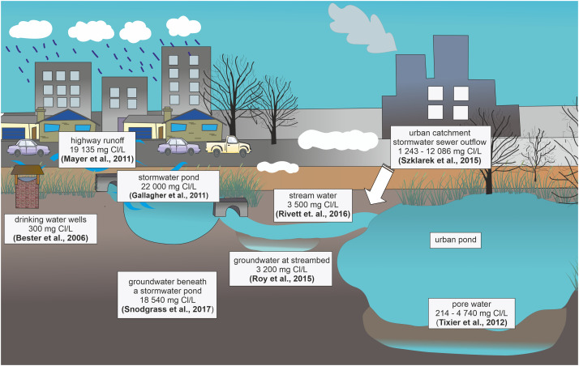
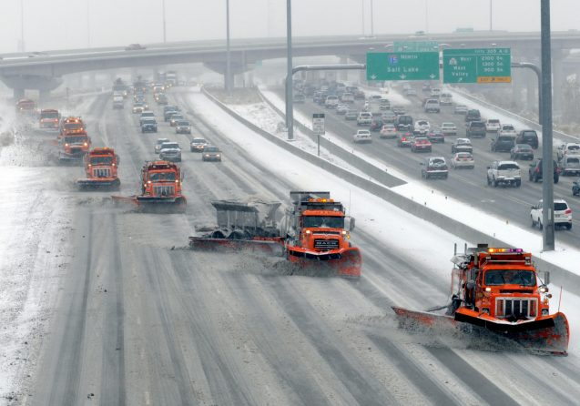
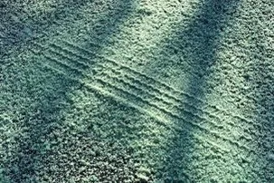

Overview
Road salt used for deicing during winter months has become a dangerous environmental pollutant. Amount of salt dissolving from roads poses a significant threat to the health and biodiversity of freshwater bodies. Road salt runoff disrupts the natural balance of aquatic ecosystems by altering water chemistry. Elevated sodium chloride levels can adversely affect the composition and diversity of phytoplankton, zooplankton, and other aquatic organisms. Chlorides appear to decrease the biodiversity of aquatic animals and plants but favour the growth of phytoplankton, especially cyanobacteria. Moreover, Cl reduces the self- purification processes of water by decreasing nutrient accumulation in macrophytes, decreasing the denitrification rate and reducing organic matter decomposition(2). The increased salinity in water bodies negatively affects fish and macro-invertebrates. It can interfere with osmoregulation in fish, impacting their reproductive success and overall population dynamics. Macro invertebrates, crucial indicators of water quality, are particularly sensitive to changes in salinity. Recent study about impacts of deicing salt on zooplankton survival indicate that, for the surviving individuals across all treatments, the number of offspring produced per individual declined with increasing Cl− concentration and in hard water. Our results indicate that current Cl− thresholds may not protect some zooplankton and reduced food availability per capita may enhance the negative impacts of road salt(3). The cumulative effect of prolonged exposure to road salt results in a decline in overall biodiversity in affected water ecosystems. Native species may struggle to survive, while non-native, salt-tolerant species may gain a competitive advantage, further altering the composition of aquatic communities. Vegetation along water bodies may suffer, and the alteration in nutrient cycles can impact the overall health and resilience of the ecosystem. According to Columbia climate school, Chloride is toxic to aquatic life, and even low concentrations can produce harmful effects in freshwater ecosystems. High chloride levels in water can inhibit aquatic species’ growth and reproduction, impact food sources, and disrupt osmoregulation in amphibians(1). The persistence of road salt in water bodies poses long-term ecological consequences, potentially leading to cascading effects throughout the food web. This creates a pressing need to address the issue proactively to prevent irreversible damage to aquatic ecosystems.Based on the current predictions on chloride concentrations for lakes in North America, many freshwater lakes will reach chloride concentrations that exceed the thresholds for aquatic species before the next century (4)(Kaushal et al., 2005; Dugan et al., 2017). The project aims to develop and implement a proactive strategy to alleviate these specific conservation problems, promoting the coexistence of road safety measures with the preservation of eastern Ontario's freshwater biodiversity.
Environmental Impact
The amount of salt used for deicing roads and highways has increased over the years along with the year-round transportation of goods and services. The many benefits that road salting provides, however are matched by some opportunities for improvement. Road salt can contaminate drinking water, kill or endanger wildlife, increase soil erosion, and damage private and public property. Alternative methods are needed to mitigate these drawbacks. The most common substance used for deicing roads and highways is Sodium Chloride (NaCl) or table salt known as rock salt when spread on the road because of its much larger granules. Nearly half a million tons is used annually in Massachusetts alone for winter road maintenance. Rock salt is very effective at melting snow and ice and is considered to be pretty cheap. But rock salt's low cost does not include the potential damage to property, infrastructure, or the environment. Though seemingly harmless to us, rock salt can have corrosive effects in large quantities that affects cars, trucks, bridges, and roads resulting in approximately $5 billion dollars in annual repairs in the U.S. alone. In addition, road salt can also infiltrate nearby surface and ground waters and can contaminate drinking water reservoirs and wells. High sodium levels in drinking water affect people with high blood pressure, and high chloride levels in surface waters are toxic to some fish, bugs, and amphibians. Furthermore, excess road salt accumulates on roadside areas killing roadside plants and harming wildlife that eat the salt crystals. Salty roads also attract animals like deer and moose (who love licking up the salt), increasing the probability of accidents and roadkill. The environmental toll and long-term costs of rock salt have inspired some states to search for alternative management practices. Magnesium chloride (MgCl2)is considered to be safer than NaCl but requires twice the amount to cover the same area, making it more expensive. Calcium chloride (CaCl2) is safer for the environment but is three times more expensive than NaCL and so is typically reserved for use in vulnerable areas. Innovative solutions that limit the amount of rock salt needed are also being explored. New technologies, such as porous pavement, are being engineered to reduce runoff from roads and have been found reduce snow and ice cover. Porous or permeable pavement allows standing water to seep through, removing water from roads that would normally go through freeze-thaw periods, thus preventing ice formation on the roads. A recent study showed that the annual median snow/ice cover on porous pavement was three times lower than that of regular pavement, and that the low amounts of ice/snow accumulating on porous pavement led to a 77% reduction in annual salt used for maintenance. Another technology gaining traction is solar roads, made up of engineered solar panels that can be walked and driven upon. This technology has the potential of converting every single road into a source of renewable energy. In addition to the added energy source, this technology could also eliminate the need for road salt by melting ice or snow through heating water in pipes embedded in the road.
Road salt is thicker than snow
Biodiversity Impact
Road salt (mainly NaCl) is commonly used during the winter to ensure road and pavement safety; however, the long-term application of NaCl has negative consequences on soil and the water environment. The aims of the present review were to evaluate the impact of road salt on catchment processes which accelerate the eutrophication of waters, and to identify a possible approach for reducing the impact of winter salt treatments of roads and sidewalks, on water body quality. The objectives were implemented in accordance with the ecohydrological approach, which recommends using hierarchical steps to solve problems. The first step was the monitoring of threats, in which the causes of high chloride (Cl) concentrations in groundwater and surface water were identified. The results indicate that long-term winter application of road salt increases the annual mean concentrations of Cl in rivers and lakes, due to Cl entering groundwater. The second step was a cause-effect analysis of the impact of NaCl on the abiotic processes in soil and water, and on the biotic response to chloride exposure. Chlorides appear to decrease the biodiversity of aquatic animals and plants but favour the growth of phytoplankton, especially cyanobacteria. Moreover, Cl reduces the self-purification processes of water by decreasing nutrient accumulation in macrophytes, decreasing the denitrification rate and reducing organic matter decomposition. The third step was to evaluate possible solutions for reducing the negative impact of NaCl on the environment, and to improve the effectiveness of alternative de-icing agents. An analysis of available literature indicates that a system-based approach integrating engineering knowledge with an understanding of biological and hydrological processes is necessary to indicate solutions for reducing environmental risks from road salt use. https://pubmed.ncbi.nlm.nih.gov/34536879/
An increasing amount of research is showing that road salt doesn’t just dissolve into thin air. Instead, as it splits into sodium and chloride ions, it gets absorbed into roadside plants, licked up by wildlife or accumulates in aquatic ecosystems—sometimes with devastating consequences. All that saltiness can help invasive or even toxic species spread, not to mention increase traffic danger due to deer and moose drawn to salt-covered roads. “It has a really widespread number of effects on the whole food web or ecosystem,” says Rick Relyea, a professor of biological sciences at Rensselaer Polytechnic Institute. Relyea has studied how road salt runoff impacts lakes as part of the Jefferson Project at Lake George in New York state. Recently, he found that road salt can reduce the size of rainbow trout hatchlings by about 30 percent, influencing their ability to elude predators and decreasing the number of eggs they lay. One experiment he worked on found that higher levels of salt could change the male-female sex ration of wood frogs.
Solutions and Mitigation
Alternatives to salt
If you're looking to make a difference in reducing road salt pollution, there are several simple yet impactful actions you can take. Start by being mindful of your salt usage during icy conditions. Only apply salt when necessary, focusing on high-traffic areas like driveways and sidewalks. Consider using alternative de-icing methods such as sand or environmentally friendly products like potassium acetate. When applying salt, remember that a little goes a long way, so use it sparingly to avoid excess runoff into nearby waterways. Additionally, be sure to properly dispose of any unused salt to prevent it from leaching into the environment. By taking these small steps and spreading awareness about the importance of responsible salt usage, you can contribute to the health of our ecosystems and help minimize the impact of road salt pollution on the environment. Cheese brine, beet juice and sand are all effective deicers in use in some places. However, they all have negative impacts on the environment — from contributing to excess sediment in water bodies to decreasing oxygen levels in lakes. One safe alternative: snow fences, or any barriers that keep snow from blowing on roadways. MnDOT has a project to increase the number of snow fences by collaborating with landowners to leave standing corn rows up to block the snow.
Promising technology
New technologies show promise for safer, salt-free roadways. One option is using nanotechnology to coat roads so ice can't build up. Solar roads are also a possibility for both safe roads and clean energy generation. Some places in Europe are installing permeable pavement that doesn't need to be de-iced. However, it's safe to say these are all a long way from widespread use. So, in the meantime ... here's one last section.
The old-fashioned ways
Remember where you live — this is Kingston, and we can't expect dry roads all the time. So when the road conditions aren't perfect (i.e. most of winter), slow down. We'd also do well to become better friends with our snow shovels. Shoveling during and after snowstorms is the best way to keep driveways and sidewalks clear. Remember: The salt bag in your garage probably won't do anything but pollute if temps are under 15 degrees.